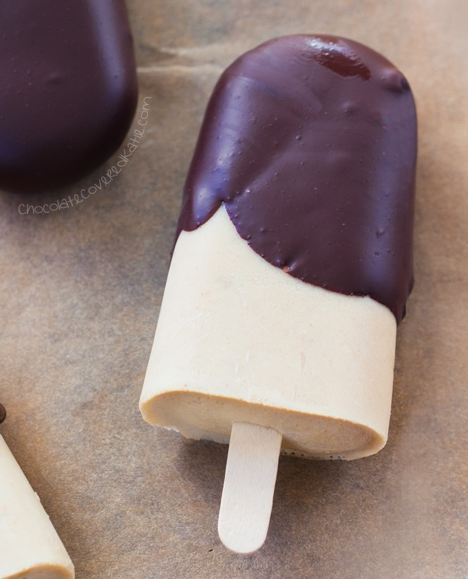

Image courtesy of and recipe adapted from Chocolate Covered Katie
Creamy peanut butter popsicles, dipped in melted chocolate – It’s basically like eating a frozen Reese’s peanut butter cup! Even better, it's 6 simple ingredients, low caloried, and filling! What more could you want in a dessert?!
Servings 6-8
Prep Time 5 minutes
Cook Time 2-4 hours
Total Time 2-4 hours and 5 minutes
Serving Size 77 g Serving Per Container 6-8Nutrition Facts
Amount Per Serving
Calories
130 kcal
Total Fat
8.8 g
Saturated Fat
2.6 g
Polyunsaturated Fat
0 g
Monounsaturated Fat
0 g
Cholesterol
0 mg
Sodium
69 mg
Potassium
0109 mg
Total Carbohydrate
9.9 g
Dietary Fiber
1.8 g
Sugars
4.8 g
Protein
4.9 g
Values are only an estimate, and in no way to be taken as 100% accurate.